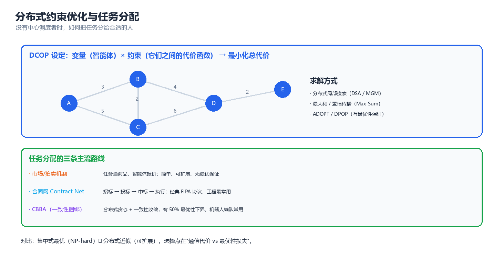
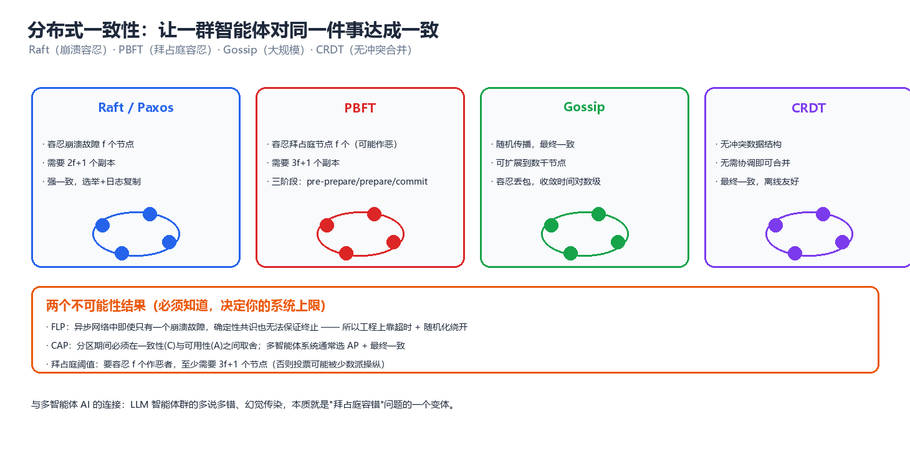

第 07 章 协调与协商（Coordination and Negotiation）
前六章解决的是"每个智能体怎么想、怎么学、怎么说话"。本章解决最古老也最工程化的问题：没有中心调度者时，一群主体怎么把事分掉、怎么达成一致、怎么在意见冲突时谈出一个结果。这条路线从 1970 年代的分布式问题求解（Distributed Problem Solving, DPS）走到今天的分布式数据库、多机器人编队与 LLM 智能体编排。四个关键词：分配（allocation）、协商（negotiation）、一致（consensus）、涌现（emergence）。
一、协调问题的分类
1.1 分解型、约束型与冲突型
判据只有一个：主体之间的耦合是"加性可分的"、"约束耦合的"、还是"目标冲突的"。
| 类型 | 英文 | 耦合形式 | 典型问题 | 代表算法 |
|---|---|---|---|---|
| 分解型 | Decomposable | \(U(\mathbf{a}) = \sum_i U_i(a_i)\)，无交叉项 | 并行流水线、MapReduce、参数服务器 | 任务分解树、拓扑排序、DAG 调度 |
| 约束型 | Constraint-coupled | \(\sum_i U_i(a_i) + \sum_{(i,j)\in E} U_{ij}(a_i,a_j)\) | 图着色、多机器人路径规划、频谱分配 | DCOP、DSA/MGM、Max-Sum、ADOPT/DPOP |
| 冲突型 | Interest-coupled | 各有自己的 \(U_i\)，且 \(\partial U_i/\partial a_j\) 常反号 | 资源争夺、价格谈判、跨部门预算 | 议价、拍卖、联盟形成、机制设计 |
三者难度严格递增：
- 分解型几乎不需要"协调"，只需要一张正确的依赖图（Airflow / Argo 这类工作流引擎就在做这件事，不涉及智能体）。若你的问题落在这一格，本章绝大多数内容用不上。
- 约束型可以完全分布式求解，且常常有最优性保证（DPOP、ADOPT）——分布式 AI 最成功的领域。
- 冲突型没有任何算法能保证"分布式求解得到社会最优"，因为社会最优本身依赖各方是否如实报告偏好。它必须交给机制设计（第 04 章）。本章 §3.2、§4 的协商协议，本质是没有中心权威时对机制设计的近似实现。
核心思想：分解型靠结构，约束型靠搜索，冲突型靠规则。 把冲突型问题当约束型去"优化"，是分布式系统设计中最常见的错误——你会在两个理性的自利主体之间得到永久震荡，而不是收敛。
1.2 耦合的度量
协调问题的底层结构是交互图（interaction graph） \(G=(V,E)\)：顶点是主体，边表示"两个主体的决策互相影响"。三个结构量决定一切：
\(\rho\) 决定通信量；\(tw(G)\) 决定最优求解复杂度（DPOP 为 \(O(\exp(tw))\)，树状问题 \(tw=1\) 时线性）；\(\Delta\) 决定局部搜索的收敛性（稠密图上极易陷入坏局部最优）。
| 图结构 | 最优求解 | 通信 | 结论 |
|---|---|---|---|
| 树 / 链（\(tw=1\)） | DPOP 秒解，线性 | \(O(n)\) | DCOP 甜蜜点 |
| 稀疏环 + 小团 | 可行但贵 | \(O(n\Delta)\) | 工程常见区间，局部搜索实用 |
| 全连接（\(\rho=1\)） | 最优解不可行 | \(O(n^2)\) | 只能机制设计 / 近似 |
1.3 集中式最优 vs 分布式可行
| 维度 | 集中式 | 分布式 |
|---|---|---|
| 信息 | 全局可见，主体上报私有状态 | 只有局部视图，靠消息补齐 |
| 解质量 | 全局最优（若可解） | 近似 / 局部最优 / 均衡 |
| 计算 | 一次性最优化，NP-hard 时用求解器 | 每主体多项式时间，但需迭代 |
| 通信 | \(O(n)\) 收集下发，含全局同步点 | $O(\text{iters}\cdot |
| 容错 | 单点失效 = 全系统失效 | 部分失效可降级运行 |
| 可扩展 | 状态空间随 \(n\) 指数爆炸 | 随度 \(\Delta\) 而非 \(n\) 增长 |
| 隐私 | 需集中私有信息（常不可接受） | 只暴露必要信息 |
| 实时 | 延迟 = 优化时间 | 延迟 = 一次迭代（可截断） |
⚠️ 常见误解：以为分布式只是"集中式的工程妥协，只能拿次优解"。两点反驳：第一，当问题含私有信息（各主体真实成本只有自己知道）时，集中式求解要求如实上报，而这在没有机制设计的情况下根本做不到——此时"集中式最优"是个不可达的上界。第二，分布式算法的任意时间（anytime）性质在实时系统里是优点：任何时刻中断都能给出当前可行的解。
三条实用折中路线：CTDE（训练用全局信息、执行只用局部，如 QMIX/MAPPO，代价是训练/部署不一致）、分层协调（上层少量主体做全局分配、下层大量主体局部调整，代价是上层成瓶颈）、市场机制（用价格代替指令，代价是需设计支付规则且可能被策略博弈）。
核心思想：集中式的"最优"在信息可集中的前提下才存在。一旦信息私有，目标就不是"逼近集中式最优"，而是"设计一个让自利主体自愿走向社会最优的规则"——前者是组合优化，后者是机制设计。
二、分布式约束优化（DCOP）
分布式约束优化（Distributed Constraint Optimization Problem, DCOP）是经典分布式 AI 的核心形式化：把约束型协调写成"各主体只控制自己的变量、代价函数因子化"的优化问题。

图：DCOP 的两种等价表示 —— 左侧是把变量与约束画在一起的因子图，右侧是投影到变量上的约束图；求解算法本质上就是在因子图上做消息传递或搜索。
2.1 DCOP 形式化
一个 DCOP 是四元组 \(\mathcal{P} = \langle \mathcal{A}, \mathcal{X}, \mathcal{D}, \mathcal{F} \rangle\)：主体集 \(\mathcal{A}=\{a_1,\dots,a_n\}\)、变量集 \(\mathcal{X}=\{x_1,\dots,x_n\}\)（\(x_i\) 由 \(a_i\) 独占控制）、离散值域 \(\mathcal{D}=\{D_i\}\)、代价函数集 \(\mathcal{F}=\{f_j\}\)，其中 \(f_j: \prod_{x \in \text{scope}(f_j)} D_x \to \mathbb{R}\)。目标是：
三条硬约束：变量私有（\(a_i\) 只能改 \(x_i\)）、约束局部（\(f_j\) 只涉及少数变量）、通信受限（只能与 scope 相交的主体通信）。
| 经典问题 | 与 DCOP 的关系 | 关键差异 |
|---|---|---|
| CSP | DCOP 的硬约束特例 \(f_j \in \{0,\infty\}\) | DCOP 允许软代价 → 永远有解、可近似 |
| 加权 CSP / Max-CSP | 术语差异，几乎等同 | 后者通常集中式求解 |
| Valued CSP | DCOP 的抽象代数推广 | 只需半环结构，不要求加法 |
| Markov Game / MDP | 单步无状态的 DCOP ≈ 一次协调决策 | DCOP 不含状态与序贯决策 |
| MAP 推断（概率图模型） | Max-Sum ↔ max-product 置信传播 | 图模型有概率语义，DCOP 只有代价 |
| 任务分配 | DCOP 的子类（变量 = 任务） | 常带"规模"约束（§3.4） |
核心思想：DCOP = 因子化 + 分布式变量控制 + 全局目标。任何"我关心总代价、但只能改自己那一格"的问题都可写成 DCOP。识别这个模式比记住算法重要得多。
2.2 DSA/MGM：局部搜索（含实跑）
局部搜索是最实用的 DCOP 算法族：无完整性保证，但通信便宜、可截断、易实现。模板是"收集邻居取值 → 计算每个候选值的局部代价 → 按某规则决定是否改变"。
| 算法 | 决策规则 | 每轮通信 | 收敛性质 |
|---|---|---|---|
| DSA-A | 从"局部最优值"集合中均匀随机选一个 | 2 轮广播 | 概率收敛到局部最优，最稳 |
| DSA-B | 以固定概率 \(p\) 改成最优值 | 2 轮广播 | 同上；\(p\) 需调 |
| MGM-1 | 只有"增益最大"的主体能改变 | 3 轮广播 | 全局代价单调不增 |
| MGM-2 | 邻居间比较增益直接决出胜者 | 2 轮广播 | 单调减少，需邻居同步 |
| DMS | 用"领养"机制允许更多并行修改 | 2 轮 | 无单调保证 |
下面用 DSA-A 求解 \(n=12\) 环形图 3 着色的 DCOP（每对相邻同色代价为 1）：
# DSA-A 求解环形图着色 DCOP: 每个主体只与左右邻居耦合
import random
random.seed(8)
N, K = 12, 3 # 12 个主体排成环, 3 种颜色
NEIGH = [[(i - 1) % N, (i + 1) % N] for i in range(N)]
def conflicts(a):
"""全局代价 = 相邻同色的边数"""
return sum(a[i] == a[j] for i in range(N) for j in NEIGH[i]) // 2
assign = [random.randrange(K) for _ in range(N)]
print(f"初始: {assign} 冲突数={conflicts(assign)}")
for t in range(1, 31):
i = random.randrange(N) # 异步: 每步只随机激活一个主体
costs = [sum(assign[j] == c for j in NEIGH[i]) for c in range(K)]
best_v = min(costs)
cand = [c for c in range(K) if costs[c] == best_v]
assign[i] = random.choice(cand) # DSA-A: 在平局集上均匀随机
if t % 5 == 0 or conflicts(assign) == 0:
print(f"第{t:2d}步: 冲突数={conflicts(assign)}")
if conflicts(assign) == 0:
break
print(f"最终: {assign} 合法着色={conflicts(assign) == 0}")
# 预期输出:
# 初始: [0, 1, 1, 0, 0, 2, 0, 0, 0, 0, 2, 0] 冲突数=6
# 第 5步: 冲突数=4
# 第10步: 冲突数=2
# 第15步: 冲突数=1
# 第20步: 冲突数=1
# 第24步: 冲突数=0
# 最终: [2, 0, 2, 0, 2, 1, 0, 1, 2, 0, 2, 1] 合法着色=True
⚠️ 同步更新的振荡风险：若改成"所有人用上一轮快照同时更新"，两个相邻主体可能同步交换颜色再换回来，形成 2-环振荡。上面的实跑用的是异步更新——这是工程默认选择；另一个解法是 DSA-B 的随机概率 \(p<1\)。
2.3 Max-Sum 与置信传播
Max-Sum 把概率图模型中的 max-product 置信传播（Belief Propagation, BP） 搬到代价函数上。因子图上有两类消息（函数表，定义域为 \(D_i\)）：
每个变量取使置信最大的值：\(\hat{x}_i = \arg\max_{x_i} \sum_{j \in \mathcal{N}(i)} r_{j \to i}(x_i)\)。
| 性质 | 结论 | 条件 |
|---|---|---|
| 最优性 | BP 收敛即给全局最优 | 因子图无环（树） |
| 有环图 | 一般只得局部最优/近似，可能不收敛 | 需阻尼（damping）或迭代截断 |
| 复杂度 | 每条消息 $O( | D |
| 通信量 | 每轮 $O( | E |
Max-Sum 的关键在于消息有语义：\(r_{j\to i}(x_i)\) 表示"函数 \(f_j\) 对 \(x_i\) 各取值的完整偏好"。在传感网、频谱分配、电力调度中，这比"我选哪个"信息量大得多，因此通常收敛到更好的解，代价是带宽。
核心思想：局部搜索传"决定"，消息传递传"偏好"。 带宽紧、需要 anytime → DSA/MGM；瓶颈是迭代次数且带宽足够 → Max-Sum。
2.4 ADOPT 与 DPOP：最优性保证
ADOPT（Modi et al. 2005）：主体按 DFS 树排序，每个主体维护子树代价下界 \(LB_i\)、当前解上界 \(UB_i\) 与承诺阈值 \(t_i\)（只有 \(UB_i \le t_i\) 才向父节点报告）。根节点满足 \(LB=UB\) 且无消息在途即终止。卖点是多项式空间，代价是时间最坏指数、通信量可能爆炸。
DPOP（Petcu & Faltings 2005）：构造伪树把回边归给子节点，自底向上消元（对不含自身变量的维度取 \(\min\)），再自顶向下选值：
| 维度 | ADOPT | DPOP |
|---|---|---|
| 空间 | \(O(\text{poly}(n,d))\) 线性 | \(O(\exp(w))\) 指数（\(w\) = 诱导宽度） |
| 时间 / 消息数 | 最坏指数，实践波动大 | 恰好 \(2n\) 条消息，无搜索 |
| 通信量 | 可能爆炸（反复重发） | 条数少但每条可能巨大 |
| 最优性 | ✅ | ✅ |
| 适用 | 宽度大但可以慢慢磨 | 宽度小（链、树、稀疏图） |
⚠️ 选型陷阱：DPOP 的"\(2n\) 条消息"极具迷惑性。真正决定可行性的是消息大小：若诱导宽度 \(w=20\)、值域 \(d=4\)，一张表就是 \(4^{20}\approx 10^{12}\) 项，完全不可行。DPOP 只适合宽度小的图。
2.5 复杂度对比
| 算法 | 最优性 | 时间复杂度 | 通信 | 空间 | 消息大小 | 同步 | 场景 |
|---|---|---|---|---|---|---|---|
| DSA-A | ❌ 局部最优 | \(O(\text{it}\cdot nd\Delta)\) | $O(\text{it}\cdot | E | )$ | \(O(\Delta d)\) | \(O(1)\) |
| MGM | ❌ 局部最优 | 同上（it 更少） | \(\times 3\) 轮 | \(O(\Delta d)\) | \(O(1)\) | 2–3 轮同步 | 需单调下降 |
| Max-Sum | ⚠️ 树上最优 | $O(\text{it}\cdot | E | \cdot d^k)$ | $O(\text{it}\cdot | E | )$ |
| ADOPT | ✅ | 最坏 \(O(\exp(n))\) | 最坏指数 | \(O(nd\cdot\text{depth})\) | \(O(1)\) | 全异步 | 需最优且宽度大 |
| DPOP | ✅ | \(O(\exp(w))\) | \(2n\) 条 | \(O(\exp(w))\) | \(O(\exp(w))\) | 两阶段同步 | 宽度小 |
| 集中式求解器 | ✅ | \(O(\exp(w))\) / NP-hard | 全量收集下发 | 全量 | 全局 | 需中心 | 小规模离线 |
核心思想：DCOP 算法没有"最好的"，只有"匹配图结构的"。选择顺序：先看树宽（能否用 DPOP）→ 再看是否必须最优（是否用 ADOPT）→ 最后看通信预算（DSA 还是 Max-Sum）。
三、任务分配（Task Allocation）
DCOP 处理"变量取值"，任务分配处理"谁去做哪件事"。它是 DCOP 的特例，但因结构特殊（变量是任务、值是主体）发展出一整套专用算法。
3.1 集中式最优：匈牙利算法（含实跑）
当主体数 = 任务数且每主体只做一个任务时，问题退化为线性分配问题（Linear Assignment Problem, LAP）：
朴素枚举 \(n!\)；匈牙利算法（Kuhn 1955；Munkres 1957）把它降到 \(O(n^3)\)。算法直觉是原始-对偶：构造标号 \(u_i, v_j\) 满足 \(u_i + v_j \le c_{ij}\)，对偶问题最大化 \(\sum u_i + \sum v_j\)；当存在紧边（\(u_i+v_j=c_{ij}\)）构成的完美匹配时，原始对偶同时最优：
# 匈牙利算法 (Kuhn-Munkres / Jonker-Volgenant 形式), 并暴力验证最优性
from itertools import permutations
import math
def hungarian(cost):
"""输入 n×n 代价矩阵, 返回 (最小总代价, 匹配数组)"""
n = len(cost)
INF = float("inf")
u = [0] * (n + 1); v = [0] * (n + 1) # 行势 / 列势
p = [0] * (n + 1); way = [0] * (n + 1) # p[j] = 匹配到列 j 的行
for i in range(1, n + 1):
p[0] = i
j0 = 0
minv = [INF] * (n + 1)
used = [False] * (n + 1)
while True:
used[j0] = True
i0, delta, j1 = p[j0], INF, -1
for j in range(1, n + 1):
if not used[j]:
cur = cost[i0 - 1][j - 1] - u[i0] - v[j] # 松弛量
if cur < minv[j]:
minv[j], way[j] = cur, j0
if minv[j] < delta:
delta, j1 = minv[j], j
for j in range(n + 1): # 更新标号
if used[j]:
u[p[j]] += delta; v[j] -= delta
else:
minv[j] -= delta
j0 = j1
if p[j0] == 0: # 到达未匹配列
break
while j0: # 回溯增广
j1 = way[j0]; p[j0] = p[j1]; j0 = j1
match = [-1] * n
for j in range(1, n + 1):
if p[j]:
match[p[j] - 1] = j - 1
return sum(cost[i][match[i]] for i in range(n)), match
C5 = [[9, 2, 7, 8, 1], [6, 4, 3, 7, 2], [5, 8, 1, 4, 9],
[7, 6, 9, 1, 5], [3, 5, 4, 2, 8]]
best_h, m_h = hungarian(C5)
best_bf = min(sum(C5[i][perm[i]] for i in range(5)) for perm in permutations(range(5)))
print(f"匈牙利: 代价={best_h} 匹配={m_h}")
print(f"暴力枚举: 代价={best_bf} 一致={best_h == best_bf}")
C7 = [[(i * 7 + j * 3) % 11 + 1 for j in range(7)] for i in range(7)]
best_h7, _ = hungarian(C7)
best_bf7 = min(sum(C7[i][perm[i]] for i in range(7)) for perm in permutations(range(7)))
print(f"7x7: 匈牙利={best_h7} 暴力={best_bf7} 一致={best_h7 == best_bf7}")
for n in (5, 8, 10, 15, 20): # 规模对比: 枚举 vs 多项式
print(f"n={n:2d}: 枚举 {math.factorial(n):>18,} vs 匈牙利 ~{n**3:>8,} 次运算")
# 预期输出:
# 匈牙利: 代价=9 匹配=[1, 4, 2, 3, 0]
# 暴力枚举: 代价=9 一致=True
# 7x7: 匈牙利=19 暴力=19 一致=True
# n= 5: 枚举 120 vs 匈牙利 ~ 125 次运算
# n= 8: 枚举 40,320 vs 匈牙利 ~ 512 次运算
# n=10: 枚举 3,628,800 vs 匈牙利 ~ 1,000 次运算
# n=15: 枚举 1,307,674,368,000 vs 匈牙利 ~ 3,375 次运算
# n=20: 枚举 2,432,902,008,176,640,000 vs 匈牙利 ~ 8,000 次运算
集中式的三条硬伤：私有成本（\(c_{ij}\) 只有主体自己知道，上报可能虚报）、单点失效、规模瓶颈（\(n=10^4\) 时 \(n^3=10^{12}\)）。对策分别是拍卖（第 04 章）、合同网（§3.3）、CBBA（§3.4）与分层分配。
3.2 市场与拍卖机制
把"分配"变成"交易"是分布式 AI 最成功的模式：主体不服从指令，只对价格做最佳回应——让局部自利自动对齐全局目标，这正是第 04 章机制设计/拍卖用于任务分配的要点。
| 拍卖 | 规则 | 真实报价? | 效率 | 适用 |
|---|---|---|---|---|
| 英式（升价） | 价格递增，最后出价者赢 | 弱 | 高效 | 单件物品 |
| 荷兰式（降价） | 价格递减，先接受者赢 | 否 | 高效 | 快速成交 |
| 第一价格密封 | 最高价赢，付自己的价 | 否 | 高效不最优 | 简单但有策略空间 |
| 第二价格（Vickrey） | 最高价赢，付第二高价 | ✅ 真实 | ✅ | 单件，理论最爱 |
| VCG | 赢家付"对其他人的外部性" | ✅ 真实 | ✅ 社会最优 | 多件、组合 |
| 组合拍卖 | 对组合出价 | 依赖机制 | 高效 | 频谱、物流（计算难） |
VCG 中赢家 \(i\) 支付 \(p_i = \sum_{j \neq i} v_j(\mathbf{x}^{-i}_j) - \sum_{j \neq i} v_j(\mathbf{x}^\*_j)\)，即"你付的钱 = 你的存在给别人造成的福利损失"，产生外部性内部化（externality internalization）：虚报只让自己受损，如实报价是占优策略。实际系统很少用 VCG（计算与支付都贵），而用顺序拍卖（sequential auction）：一个个任务拍、每个给当前边际价值最高的主体——本质是贪心。
3.3 合同网协议（Contract Net Protocol）
合同网（CNP, Smith 1980）是分布式 AI 最广为人知的协议，地位相当于分布式 AI 界的 TCP/IP。
发起者 (Manager) 潜在承包者 (Contractors)
│ │
│ ① 任务通告 (Task Announcement) │ A
│ ──────────────────────────────────────────▶ │ B
│ 含任务描述 / 截止时间 / 质量要求 │ C
│ 广播, 或经目录服务 (Directory Facilitator) │
│ │
│ ② 投标 (Bid) │
│ ◀────────────────────────────────────────── │ A: 报价 12
│ 含价格 / 时间 / 能力证明 │ B: 报价 8
│ │ C: 弃权
│ ③ 评估 (Evaluation) │
│ 按 价格 × 信誉 × 时间 × 违约风险 排序 │
│ │
│ ④ 授标 (Award) ─────────────────────────▶ │ B 中标
│ ⑤ 承诺/拒绝 (Accept / Refuse) ◀─────────── │ B 接受
│ ⑥ 执行 → 汇报结果 (Report) ───────────────▶ │
│ ⑦ 失败处理: 超时未汇报 → 重新招标 (FAQ) │
七个关键设计点：通告方式（主体 > 20 时用目录服务 DF，否则广播风暴）、投标内容（完整报价更贵但避免"中标后做不了"）、授标策略（生产系统用多准则 + 信誉分，而非最低价）、并发（有依赖时用队列 + 依赖图）、超时（必须有，且要有重新招标 FAQ 路径）、承诺语义（硬承诺简单；软承诺更灵活但需结算机制）、反作弊（无信誉/押金约束下必现"低价抢标再延期"，见第 10 章共谋与级联失效）。
CNP 今天依然活着，只是换了名字：Kubernetes 调度器（Manager）+ kubelet 上报资源（Bid）+ 绑定（Award）、AWS Spot 竞价实例（反向拍卖）、供应链采购招标、众包平台、LLM 智能体编排中的子任务分发（第 08 章）。
核心思想：合同网长寿的原因是它把"分配"从一次全局优化降级为一串局部谈判 + 承诺。代价是次优，收益是无需中心、可扩展、天然容错。
3.4 CBBA：一致性捆绑算法
当任务之间有依赖（做 B 前必须做 A）且主体能力异质时，逐任务拍卖会出问题。CBBA（Consensus-Based Bundle Algorithm, Choi, Brunet & How 2009）是解法，也是多机器人任务分配的事实标准。
机制一：捆绑（bundling）。每个主体维护一个有序任务包 \(b_i\)，加入任务 \(j\) 的边际增益是"试遍所有插入位置"的最大增量：
机制二：一致性（consensus）。主体交换"出价 + 赢家"向量，按下表消解冲突：
| 情况 | 规则 | 谁赢 |
|---|---|---|
| 对方出价高，且该任务在我的包里 | 我放弃该任务（并连带释放其后所有任务） | 对方 |
| 对方出价高，但该任务不在我包里 | 更新赢家，可能加入该任务 | 对方 |
| 我的出价高 | 保留赢家元组不变 | 我 |
| 出价相同 | 按主体 ID 字典序打破平局 | ID 小者 |
平局按 ID 打破是关键设计——它保证所有主体经有限轮共识后收敛到同一份分配，否则会无限来回更新。
CBBA (每个主体 i 独立执行):
初始化: b_i ← ∅; p_i ← ∅; y_i ← 0^{N_t}; z_i ← -∞^{N_t}
# y_i[j] = 赢得任务 j 的主体, z_i[j] = 该任务当前最高出价
循环直到共识收敛 (或达最大轮数):
阶段 1 任务包构建 (Bundle Build):
重复:
c_i ← 所有可行任务的边际增益 (试遍每个插入位置, 取最大)
J_i ← argmax_j c_i[j]
若 c_i[J_i] > 0 且 J_i 可行:
b_i ← b_i ⊕_{n*} {J_i} # 按最优位置插入
p_i ← path(b_i); y_i[J_i] ← i; z_i[J_i] ← c_i[J_i]
否则 break
阶段 2 一致性 (Consensus) —— 与邻居交换 (y_i, z_i):
对每个邻居 k, 每个任务 j:
if z_k[j] > z_i[j]: # 邻居出价更高
z_i[j] ← z_k[j]; y_i[j] ← y_k[j]
if y_i[j] == i: 从 b_i 中移除 j 及其后所有任务
elif y_k[j] == k and z_i[j] == z_k[j] and i < k: # 平局, ID 小者赢
z_i[j] ← z_k[j]; y_i[j] ← k
if y_i[j] == i: 从 b_i 中移除 j 及其后所有任务
若 (y_i, z_i) 无变化: 收敛
收敛性：通信不中断且信息有限时间可达时，CBBA 有限轮内收敛到无冲突分配；收敛到的是贪心解的共识，不是最优解。为什么是 50% 下界：任务包构建是贪心最大化单调子模函数、受分区拟阵（partition matroid）约束的过程，对此有经典结论：
直觉：贪心每步选当前最大边际增益 \(c_t\)，而最优解 \(t\) 个任务的总增益不超过 \(t \cdot c_t\)（否则贪心一开始就会选那个更大的），因此 \(t\) 步后贪心至少拿到最优增益的一半。
⚠️ \(1/2\) 是下界，不是实际表现。真实实例上 CBBA 通常达到最优的 90%–100%（下面实跑可见）。\(1/2\) 是最坏情况保证，只有在写工程承诺文档时才有意义。
下面用"覆盖型子模估值"实例实测该比值（每个 (主体, 任务) 对覆盖论域的一个随机子集，主体价值 = 其任务包覆盖并集的大小）：
# 顺序拍卖 (贪心, CBBA 的分配核心) vs 最优分配: 实测近似比
import random
from itertools import product
random.seed(2024)
N_TASK, N_AGENT, UNIV = 5, 3, 8
def make_instance():
"""每个 (主体, 任务) 对覆盖一个随机元素集合 (保证单调子模)"""
return [[{e for e in range(UNIV) if random.random() < 0.45}
for _ in range(N_TASK)] for _ in range(N_AGENT)]
def value(cover, bundles):
tot = 0
for i in range(N_AGENT):
u = set()
for j in bundles[i]:
u |= cover[i][j]
tot += len(u)
return tot
def greedy(cover):
"""顺序拍卖: 每次选 (主体, 未分配任务) 中边际覆盖增益最大者"""
taken, bundles = set(), [set() for _ in range(N_AGENT)]
while True:
best, bi, bj = 0, -1, -1
for i in range(N_AGENT):
cur = set()
for j in bundles[i]:
cur |= cover[i][j]
for j in range(N_TASK):
if j in taken:
continue
gain = len(cur | cover[i][j]) - len(cur)
if gain > best:
best, bi, bj = gain, i, j
if bi < 0:
break
bundles[bi].add(bj)
taken.add(bj) # 任务只能被一个主体认领 (分区拟阵)
return value(cover, bundles)
def optimal(cover):
best = 0
for assign in product(range(N_AGENT + 1), repeat=N_TASK): # N_AGENT = 不分配
bundles = [set() for _ in range(N_AGENT)]
for j, a in enumerate(assign):
if a < N_AGENT:
bundles[a].add(j)
best = max(best, value(cover, bundles))
return best
ratios = []
for _ in range(150):
c = make_instance()
ratios.append(greedy(c) / optimal(c))
print(f"150 个随机覆盖实例 ({N_TASK} 任务 / {N_AGENT} 主体 / 论域 {UNIV}):")
print(f" 贪心/最优: 最小={min(ratios):.4f} 平均={sum(ratios)/len(ratios):.4f} 最大={max(ratios):.4f}")
print(f" 低于 0.5 的实例: {sum(r < 0.5 for r in ratios)} 低于 0.8: {sum(r < 0.8 for r in ratios)}")
print(f" 达到最优的实例: {sum(r > 0.9999 for r in ratios)}")
# 预期输出:
# 150 个随机覆盖实例 (5 任务 / 3 主体 / 论域 8):
# 贪心/最优: 最小=0.8421 平均=0.9759 最大=1.0000
# 低于 0.5 的实例: 0 低于 0.8: 0
# 达到最优的实例: 100
实测最差 0.8421、平均 0.9759，远好于理论下界 \(1/2\) —— 这正说明下界是"安全垫"而非"预期值"。
四、协商与议价（Negotiation and Bargaining）
任务分配解决"谁做"，协商解决"条件是什么"。当双方利益对立、但成交都好于不成交时，就需要议价。
4.1 三类协商协议
(a) 单调让步（Monotonic Concession Protocol）：双方各有保留值 \(r_i\)，"接受当且仅当对方的提议让我变好"：
双方都不再让步且未达成一致 → 僵局。
(b) Zeuthen 协议（风险让步）：比较双方承担僵局风险的程度，风险小的一方先让步：
分子是"对方坚持时我的损失"，分母是"谈崩时我的损失"。\(\rho_i\) 越大说明让步代价相对越小。
(c) 时间依赖让步（Time-Dependent Tactics, Faratin et al. 1998）：用退火函数控制让步幅度
| 参数 | 名称 | 效果 |
|---|---|---|
| \(\beta_i < 1\) | Boulware（固执型） | 前期几乎不让，临近截止才松口 |
| \(\beta_i = 1\) | 线性让步 | 匀速 |
| \(\beta_i > 1\) | Conceder（慷慨型） | 一开始就让很多 |
核心思想：\(\beta\) 决定谁是"时间压力"下的赢家。截止时间紧迫（\(T\) 小）会迫使你 \(\beta\) 大（早期让步多），拿到更差的解。这就是"谈判力"在自动化协商里的量化定义：谈判力 = 你能忍受僵局的时间。
| 协议 | 信息需求 | 收敛性 | 谈判力来源 | 典型问题 |
|---|---|---|---|---|
| 单调让步 | 只需对方的效用增量 | 有限轮终止 | 让步空间大小 | 双双僵持 |
| Zeuthen | 需双方效用与僵局点 | 终止，且唯一子博弈完美均衡 | 风险承受力 | 需完整效用信息 |
| 时间依赖让步 | 只看时间与 \(\beta\) | 到 \(T\) 必终止 | 截止时间紧迫度 | 参数需调 |
| 启发式让步 | 需对手偏好结构 | 经验收敛 | 找到互利的维度交换 | 需学习对手模型 |
| 基于论据的协商 | 允许"为什么" | 无终止保证 | 论据可信度 | 表达复杂 |
4.2 Nash 讨价还价解（含实跑）
Nash（1950）问：一个"公平的"议价结果应满足哪些公理？帕累托有效、对称性、仿射不变、无关备选独立性（IIA）。四公理唯一确定最大纳什积的解：
其中 \(d_i\) 是分歧点（disagreement point）。两方情形取对数求导（内点解）：
直觉解读：相对边际效用大的一方拿得多。谁对这份资源更敏感（\(\frac{u'}{u-d}\) 更大），谁在纳什解里占更大份额——这就是"风险厌恶者（凹效用更陡）在纳什解里得到更多"的数学来源。
# Nash 讨价还价解: 数值最大化 vs 闭式解对照
import numpy as np
x = np.linspace(1e-6, 1 - 1e-6, 1_000_001) # 主体1 得 x, 主体2 得 1-x
def nash_solve(u1, u2, d1=0.0, d2=0.0, lam=0.5):
"""网格最大化广义纳什积 (u1-d1)^lam · (u2-d2)^(1-lam)"""
a1, a2 = u1(x) - d1, u2(x) - d2
ok = (a1 > 0) & (a2 > 0)
val = np.full_like(x, -np.inf)
val[ok] = lam * np.log(a1[ok]) + (1 - lam) * np.log(a2[ok]) # 对数形式更稳
k = int(np.argmax(val))
return x[k], np.exp(val[k])
cases = [
("线性效用 lam=0.5", lambda t: t, lambda t: 1 - t, 0.0, 0.0, 0.5, "x* = 1/2"),
("线性效用 lam=0.7", lambda t: t, lambda t: 1 - t, 0.0, 0.0, 0.7, "x* = lam = 0.7"),
("非线性 lam=0.5", lambda t: np.sqrt(t), lambda t: 1 - t, 0.0, 0.0, 0.5, "x* = 1/3"),
("带分歧点 d=(0.2,0.2)", lambda t: t, lambda t: 1 - t, 0.2, 0.2, 0.5, "x* = 1/2"),
]
print(f"{'情形':<22}{'数值解 x*':>12}{'闭式解':>16}{'纳什积':>12}")
for name, u1, u2, d1, d2, lam, closed in cases:
xv, v = nash_solve(u1, u2, d1, d2, lam)
print(f"{name:<22}{xv:>12.6f}{closed:>16}{v:>12.6f}")
xs = np.linspace(0.30, 0.37, 8) # 非线性例在 x=1/3 附近局部扫描
print("\n非线性例在 x=1/3 附近局部扫描:")
for a, b in zip(xs, np.sqrt(xs) * (1 - xs)):
print(f" x={a:.4f} sqrt(x)(1-x)={b:.6f}")
# 预期输出:
# 情形 数值解 x* 闭式解 纳什积
# 线性效用 lam=0.5 0.500000 x* = 1/2 0.500000
# 线性效用 lam=0.7 0.700000 x* = lam = 0.7 0.542881
# 非线性 lam=0.5 0.333333 x* = 1/3 0.620403
# 带分歧点 d=(0.2,0.2) 0.500000 x* = 1/2 0.300000
#
# 非线性例在 x=1/3 附近局部扫描:
# x=0.3000 sqrt(x)(1-x)=0.383406
# x=0.3100 sqrt(x)(1-x)=0.384176
# x=0.3200 sqrt(x)(1-x)=0.384666
# x=0.3300 sqrt(x)(1-x)=0.384886
# x=0.3400 sqrt(x)(1-x)=0.384843
# x=0.3500 sqrt(x)(1-x)=0.384545
# x=0.3600 sqrt(x)(1-x)=0.384000
# x=0.3700 sqrt(x)(1-x)=0.383214
四个数值解全部与闭式解吻合到 \(10^{-6}\)；扫描表也确认 \(\sqrt{x}(1-x)\) 在 \(x=1/3\) 取到峰值 0.384886。
4.3 多方协商与联盟形成
两方协商有唯一解概念；多方立刻变复杂：解概念不唯一（Nash / Kalai-Smorodinsky / Egalitarian 在 \(n>2\) 时给出不同结果）、联盟结构本身是决策变量、且枚举所有划分是钟数（Bell number）级别（\(n=10\) 已有 115975 种划分）。
| 解概念 | 最大化目标 | 公平直觉 | 缺点 |
|---|---|---|---|
| Nash 解 | \(\prod (u_i - d_i)\) | 满足 IIA 与对称性 | IIA 在多方争议大 |
| Kalai-Smorodinsky | 保持各方相对让步比例相等 | "每人让出同样比例" | 可能不在可行集边界上 |
| Egalitarian | \(\max \min_i (u_i - d_i)\) | 最大化最弱者收益 | 浪费总效率 |
| 比例解 | \(u_i \propto d_i\) 或谈判力 | 按"贡献"分 | 需要谈判力度量 |
核心（Core） 是最直接的稳定性概念：没有任何子联盟能通过"退出自立"获得更多：
Shapley 值是唯一同时满足有效性、对称性、哑元、可加性的分配，它把每个主体的贡献定义为"他在所有加入顺序上的平均边际贡献"：
⚠️ Shapley 的复杂度：精确计算需 \(2^n\) 次评估。\(n=20\) 是 100 万次（可接受），\(n=30\) 是 10 亿次（不可接受）。大联盟的工程做法是蒙特卡洛采样：随机抽加入顺序，用边际贡献的样本均值估计 \(\phi_i\)。
五、分布式一致性（Distributed Consensus）
从"分什么"转向"同意什么"。分布式一致性是分布式系统的心脏，也是多智能体协调理论最成熟的分支。

图：一致性问题的三种网络视角 —— 左侧是完全图上的全互通共识，中间是有环/有割点的稀疏图（影响收敛速度），右侧是存在故障节点时的一致性问题（需要拜占庭容错）。
5.1 问题形式化
\(n\) 个节点，节点 \(i\) 有初值 \(x_i(0)\)，按线性协议迭代：
写成 \(\mathbf{x}(t+1) = W\mathbf{x}(t)\)，\(W\) 为行随机（row-stochastic）权重矩阵。若通信图连通且 \(W\) 双随机（double-stochastic），则收敛到平均共识 \(\frac{1}{n}\sum_j x_j(0)\)。收敛速度由谱隙（spectral gap）决定：
| 图结构 | \(\lambda_2\)（近似） | 混合时间 | 工程含义 |
|---|---|---|---|
| 完全图 | \(\approx 0\)（除 \(\lambda_1=1\)） | \(O(1)\) | 一轮广播即共识 |
| 随机图（连接概率 \(p\)） | \(1-\Theta(1)\) | \(O(\log n)\) | 稀疏图中最快 |
| 2D 网格（\(k\times k\)） | \(\approx \pi^2/k^2\) | \(O(n\log n)\) | 慢 |
| 环 | \(\cos(2\pi/n)\) | \(O(n^2)\) | 最慢 |
核心思想：拓扑决定速度。 环上共识要 \(O(n^2)\) 步，随机图只要 \(O(\log n)\) 步。所以 gossip 协议的第一设计原则是"把图连得更随机"，而不是"优化消息格式"。
四层问题：收敛一致（无故障）、崩溃容错一致（\(n\ge 2f+1\)，Paxos/Raft/ZAB）、拜占庭容错一致（\(n \ge 3f+1\)，PBFT/Tendermint/HotStuff）、最终一致（CRDT/Dynamo）。
5.2 Raft / Paxos 的直觉
Paxos 解决"一个值达成共识"（Single-Decree，多值靠 Multi-Paxos 复用），两阶段是 Prepare/Promise → Accept/Accepted。关键不变量是 多数派交集（quorum intersection）：任何两个多数派至少有一个公共成员，因此"已被选定的值"不会在后续轮次被覆盖——这是所有一致性算法的共同基石。
Raft 的设计目标是可理解性，把 Paxos 拆成三个独立子问题：
| 子问题 | Raft 方案 | 关键机制 |
|---|---|---|
| 领导选举 | 任期（term）+ 随机超时 + 得票多数 | 随机化超时避免选票瓜分（split vote） |
| 日志复制 | Leader 追加 → 广播 → 多数确认 → commit | 日志匹配性质（Log Matching Property） |
| 安全性 | 只有"日志至少一样新"的候选者能当选 | 保证已 commit 的条目永不丢失 |
| 维度 | Paxos | Raft |
|---|---|---|
| 抽象层次 | 单值共识原语，多值需自行组合 | 直接给"复制状态机"完整方案 |
| 领导 | 无固定领导（Multi-Paxos 可加） | 强领导 |
| 日志空洞 | 允许 | 不允许（强领导顺序追加） |
| 生产系统 | Chubby、Spanner | etcd、Consul、TiKV、CockroachDB |
核心思想：Paxos 与 Raft 都是崩溃容错算法——它们假设故障节点只会"沉默"，不会"撒谎"。一旦节点可能恶意伪造消息，就进入 PBFT 的世界，阈值从 \(2f+1\) 跳到 \(3f+1\)。
5.3 PBFT 三阶段（含实跑）
PBFT（Practical Byzantine Fault Tolerance, Castro & Liskov 1999）是第一个实用的拜占庭容错共识，核心是三阶段投票：
Client Primary Backup 1 Backup 2 Backup 3
│ │ │ │ │
│ request ──▶│ │ │ │
│ │ PRE-PREPARE│ │ │ ① 主节点定序 (view, seq)
│ │──(v,seq,m)▶│──────────▶│──────────▶│
│ │ PREPARE │ │ │ ② "我收到并同意本次序"
│ │◀───────────│───────────│───────────│
│ │───────────▶│ │ │
│ [收到 2f 个匹配 PREPARE → 进入 prepared] │
│ │ COMMIT │ │ │ ③ "我准备好提交"
│ │◀───────────│───────────│───────────│
│ │───────────▶│ │ │
│ [收到 2f+1 个匹配 COMMIT → 执行并回复] │
│ reply ────▶│ │ │ │
│◀───────────│◀───────────│◀──────────│◀──────────│
| 阶段 | 收集阈值 | 含义 |
|---|---|---|
| PRE-PREPARE | 1（来自 primary） | 主节点给出本次序（view, seq） |
| PREPARE | \(2f\) 个与自己匹配的 | 保证同一序内不会有两个不同值 |
| COMMIT | \(2f+1\) 个（含自己） | 保证跨视图安全（视图切换后仍一致） |
下面的模拟做两件事：(1) 用投票计数检验活性；(2) 用法定人数交集判定检验安全性。
# 简化 PBFT 投票模拟 + 法定人数交集判定
import random
random.seed(11)
VAL, ALT = "v", "v'"
def pbft_round(n, f, q):
"""拜占庭行为: 静默(50%) 或 撒谎(只发 v'); 诚实节点一律广播 v"""
byz = set(random.sample(range(1, n), f))
inbox = [dict() for _ in range(n)]
for s in range(n):
if s in byz:
if random.random() < 0.5:
continue # 静默失效: 什么都不发
for r in range(n):
inbox[r][s] = ALT # 双发/造谣
else:
for r in range(n):
inbox[r][s] = VAL
votes = []
for i in range(n):
if i in byz:
votes.append(None)
continue
cnt = {}
for x in inbox[i].values():
cnt[x] = cnt.get(x, 0) + 1
got = [k for k, c in cnt.items() if c >= q] # 收集到 q 个匹配消息
votes.append(got[0] if got else None)
honest = [x for i, x in enumerate(votes) if i not in byz]
done = [x for x in honest if x is not None]
return len(set(done)) > 1, len(done) == 0 # (安全性违例, 全部停摆)
ROUNDS = 4000
print("实验 1: 投票模拟 (法人数 q = 2f+1, 拜占庭 = 静默或撒谎)")
print(f"{'配置':<22}{'q':>4}{'安全性违例':>12}{'全部停摆':>12}{'提交率':>10}")
for f in (1, 2, 3):
for n in (3 * f, 3 * f + 1):
q = 2 * f + 1
bad = stall = 0
for _ in range(ROUNDS):
b, s = pbft_round(n, f, q)
bad += b; stall += s
tag = f"n={n} f={f} " + ("3f+1" if n == 3 * f + 1 else "3f ")
print(f"{tag:<22}{q:>4}{bad:>12}{stall:>12}{(stall == 0) * 100:>9.0f}%")
print("\n实验 2: 法定人数交集判定 (安全 iff 最小交集 2q-n > f; 可达 iff q <= n-f)")
print(f"{'n':>4}{'f':>4}{'q':>4}{'2q-n':>7}{'>f?':>7}{'q<=n-f?':>10} 结论")
for n, f, q in [(4, 1, 2), (4, 1, 3), (3, 1, 3), (7, 2, 3),
(7, 2, 5), (9, 3, 7), (10, 3, 7)]:
inter, safe, live = 2 * q - n, 2 * q - n > f, q <= n - f
verdict = ("安全且可提交" if (safe and live)
else ("安全但可能无法提交" if safe else "不安全!"))
print(f"{n:>4}{f:>4}{q:>4}{inter:>7}{str(safe):>7}{str(live):>10} {verdict}")
# 预期输出:
# 实验 1: 投票模拟 (法人数 q = 2f+1, 拜占庭 = 静默或撒谎)
# 配置 q 安全性违例 全部停摆 提交率
# n=3 f=1 3f 3 0 4000 0%
# n=4 f=1 3f+1 3 0 0 100%
# n=6 f=2 3f 5 0 4000 0%
# n=7 f=2 3f+1 5 0 0 100%
# n=9 f=3 3f 7 0 4000 0%
# n=10 f=3 3f+1 7 0 0 100%
#
# 实验 2: 法定人数交集判定 (安全 iff 最小交集 2q-n > f; 可达 iff q <= n-f)
# n f q 2q-n >f? q<=n-f? 结论
# 4 1 2 0 False True 不安全!
# 4 1 3 2 True True 安全且可提交
# 3 1 3 3 True False 安全但可能无法提交
# 7 2 3 -1 False True 不安全!
# 7 2 5 3 True True 安全且可提交
# 9 3 7 5 True False 安全但可能无法提交
# 10 3 7 4 True True 安全且可提交
两个实验的结果完全互补：\(n=3f\) 时安全性没被破坏（0 违例），但 4000 轮里所有诚实节点一次都提交不了（提交率 0%）——这是活性/终止性的失败；\(n=3f+1\) 时提交率 100%。实验 2 显示，一旦把法定人数缩到 \(f+1\)（崩溃容错式的小法定人数），\(2q-n \le f\)，两个法定人数可能全由拜占庭节点组成，安全性立刻失效。所以 \(n \ge 3f+1\) 不是苛刻，而是同时满足"可达"与"交集必含诚实节点"的唯一解（推导见 §8.2）。
工程门槛：单次共识消息数 \(O(n^2)\)（每节点向所有节点广播 PREPARE + COMMIT），视图切换最坏 \(O(n^3)\)（PBFT 的主要性能瓶颈），容错 \(f=\lfloor(n-1)/3\rfloor\)。现代改进 HotStuff / Tendermint 把视图切换降到 \(O(n)\)，这就是为什么公链不用经典 PBFT 而用 BFT 变种。
5.4 Gossip 与最终一致（含实跑）
当"强一致"太贵时，退回最终一致（eventual consistency）。
| 变种 | 每轮行为 | 收敛时间 | 通信量 |
|---|---|---|---|
| Anti-entropy（反熵） | 与随机同伴交换完整状态并合并 | \(O(\log n)\) 轮 | 每轮 \(O(n)\) 大消息 |
| Rumor mongering（谣言传播） | 只推新消息，被拒绝则降热情 | \(O(\log n)\) 轮 | 小消息多播 |
| Aggregation（聚合） | 只交换摘要/均值 | \(O(\log n)\)–\(O(n^2)\) | 极小 |
Gossip 有三个漂亮性质：容错（任意节点/消息丢失都不影响最终收敛，只要图保持连通）、可扩展（每节点负载 \(O(\log n)\)，与规模解耦）、简单（无需成员管理，成员列表可先过期）。代价是没有时间上界——只能保证"最终"收敛。
# Gossip 平均一致性: 随机配对交换, 观察共识误差随时间的衰减
import numpy as np
rng = np.random.default_rng(3)
n = 50
x0 = rng.normal(0.0, 1.0, n)
x0[0] = 5.0 # 一个异常节点, 看它如何被"平均"掉
x = x0.copy()
mean0, err0 = x0.mean(), np.linalg.norm(x0 - x0.mean())
snap = [1, 5, 10, 20, 50, 100, 200, 500]
print(f"节点数 n={n}, 初始共识误差={err0:.4f}, 初始均值={mean0:.4f}")
for t in range(1, 501):
i = int(rng.integers(0, n))
j = int(rng.integers(0, n - 1))
j += (j >= i) # 保证 i != j
m = 0.5 * (x[i] + x[j]) # 成对平均 (双随机)
x[i] = x[j] = m
if t in snap:
print(f"第{t:4d}步: 相对共识误差={np.linalg.norm(x - mean0) / err0:.6f}"
f" 方差={x.var():.6f} 均值={x.mean():.6f}")
print(f"\n理论上界: 每步收缩因子 ~= 1 - 1/(2n) = {1 - 1 / (2 * n):.4f}"
f"; 200 步 = {(1 - 1 / (2 * n)) ** 200:.6f}")
# 预期输出:
# 节点数 n=50, 初始共识误差=8.9521, 初始均值=0.0840
# 第 1步: 相对共识误差=0.999997 方差=1.602788 均值=0.084045
# 第 5步: 相对共识误差=0.992158 方差=1.577760 均值=0.084045
# 第 10步: 相对共识误差=0.958537 方差=1.472640 均值=0.084045
# 第 20步: 相对共识误差=0.924121 方差=1.368791 均值=0.084045
# 第 50步: 相对共识误差=0.785308 方差=0.988460 均值=0.084045
# 第 100步: 相对共识误差=0.473789 方差=0.359789 均值=0.084045
# 第 200步: 相对共识误差=0.144355 方差=0.033400 均值=0.084045
# 第 500步: 相对共识误差=0.004862 方差=0.000038 均值=0.084045
#
# 理论上界: 每步收缩因子 ~= 1 - 1/(2n) = 0.9900; 200 步 = 0.133980
三点值得注意：均值从第一步起就恒等于 0.084045（成对平均是"保均值"操作，这正是双随机的含义）；异常节点被平滑地"摊平"而不是被丢弃；200 步实测 0.1444 与理论上界 0.1340 同量级，500 步降到 0.005。
5.5 CRDT：让合并天然收敛
CRDT（Conflict-free Replicated Data Type，无冲突复制数据类型） 是对"最终一致"的构造性回答：不靠协商解决冲突，而是设计数据结构使任何副本的合并（merge）都满足交换律、结合律、幂等律：
三条合起来意味着：任何接收顺序、任何重复投递，最终状态都相同——即连接半格（join-semilattice），merge 取上确界。
| 类型 | 全称 | 合并方式 | 例子 |
|---|---|---|---|
| CvRDT | 基于状态的 CRDT | 状态之间 merge（取上确界） | G-Counter、PN-Counter、LWW-Register |
| CmRDT | 基于操作的 CRDT | 操作需可交换且因果就绪 | 仅可增集合、op-based log |
| Delta-CRDT | 只传增量状态 | 传 \(\delta\)-mutator 而非全状态 | 大规模场景优化 |
| 数据结构 | 内部表示 | merge 操作 | 解决的问题 |
|---|---|---|---|
| G-Counter | 每副本一个分量 \([c_1,\dots,c_n]\) | 逐分量取 \(\max\)，值 = \(\sum c_i\) | 多副本计数不重复不丢失 |
| PN-Counter | 两个 G-Counter（增/减） | 两个都逐分量 \(\max\)，值 = 增 − 减 | 支持减法 |
| LWW-Register | (值, 时间戳, 副本 ID) | 取时间戳更大者，平局比 ID | "最后写入获胜"语义 |
| OR-Set | 每个元素带唯一标签集合 | 存在 ⟺ 标签集非空；删除 = 移除已知标签 | 解决"删-加竞态" |
⚠️ CRDT 的代价：它把"一致性协商"从运行时搬到了数据结构设计时。换来零协调开销，付出的是：(1) 元数据膨胀（OR-Set 的标签累积，需 tombstone 回收）；(2) 语义受限（无法表达"必须全局互斥"的强约束，如余额不能为负，需要"边界 CRDT"或额外协调）。"什么时候不该用 CRDT"和"什么时候用"一样重要。
5.6 FLP 与 CAP 的工程取舍
FLP 不可能性定理（Fischer, Lynch, Paterson 1985）：在异步系统中，即使只有一个节点可能崩溃，也不存在既保证安全又保证终止的确定性共识算法。三条逃生通道：部分同步假设（假设消息延迟有上界但不知具体值——Paxos/Raft/PBFT 全部依赖它）、随机化（用随机数破坏对称性，只能概率终止）、弱化终止（允许"最后决定"延迟但保安全，分区时可能无限等待）。
核心思想：FLP 不是说"共识不可能"，而是说"纯异步 + 确定性 + 全终止三者不可兼得"。 工程系统全部选择牺牲"全终止"（活性靠超时重试），因为安全性的违背不可修复（数据不一致），而活性的暂缺可恢复（稍后重试）。这是分布式系统最重要的工程价值观。
CAP 定理（Brewer 2000；Gilbert & Lynch 2002）常被误读为"三选二"。精确陈述是：在异步网络模型下，不可能同时满足线性一致性（C）、可用性（A）、分区容忍（P）。P 不是可选项，所以真实表述是"当分区发生时，在 C 与 A 之间选择"；且 C 是线性一致性，不是"最终一致"。证明思路：分区把节点分成 \(G_1,G_2\)，客户端分别写 \(v_1\)、\(v_2\)；若两者都返回成功（保 A），则必须有一个全序决定先后，但跨组消息被丢弃，\(G_2\) 无从知道 \(v_1\) 存在。要么不返回（牺牲 A），要么返回但不满足线性一致（牺牲 C）。
CAP 的缺陷是只讨论分区时行为，而现实中 99.9% 的时间没有分区。PACELC（Abadi 2012）补上这一块：
其中 \(L\) 是 Latency（延迟）。核心洞见：即使没有分区，强一致性也有代价——它需要协调（同步复制），而协调引入延迟。
| 系统类别 | 分区时 | 正常时 | 代表 | 适用 |
|---|---|---|---|---|
| PC/EC | C | C | ZooKeeper、etcd、Spanner | 配置管理、元数据、金融交易 |
| PA/EL | A | L | Dynamo、Cassandra、Riak | 高可用会话、物联网遥测 |
| PC/EL | C | L | PNUTS（部分配置） | 少见，特定负载 |
跨地域部署中，同步复制的一次共识往返会带来几十到几百毫秒延迟（受光速限制）——这是为什么全球规模系统在核心交易上用 CP、在计数/时间线上用 AP + CRDT。
六、群体智能（Swarm Intelligence）
前五节都是有明确目标函数的协调。群体智能（Swarm Intelligence, SI）研究另一种协调：大量简单个体遵循局部规则，涌现出全局有组织的行为。
图：群体智能的三种范式 —— Boids 的局部规则涌现（左）、蚁群优化的信息素正反馈（中）、粒子群的群体搜索（右）；三者共享"局部互动 → 全局结构"这一主线。
6.1 Boids 三规则（含实跑）
Reynolds（1987）用三条局部规则模拟鸟群，是"涌现"最优雅的示范。
| 规则 | 英文 | 计算 | 作用 | 半径 |
|---|---|---|---|---|
| 分离 | Separation | 背离过近邻居的质心偏移 | 防碰撞 | 短程 |
| 对齐 | Alignment | 转向邻居平均速度 | 方向一致 | 中程 |
| 聚合 | Cohesion | 转向邻居重心 | 维持群体 | 中程 |
三条合成加速度后再积分与限速：
关键：三条规则没有任何全局目标函数。 群体行为是涌现的，不是被优化的。要量化"队形好不好"需要三个指标：
| 指标 | 定义 | 含义 |
|---|---|---|
| 极化度 \(\varphi\)（序参量） | \(\varphi = \|\sum_i\mathbf{v}_i\| / \sum_i\|\mathbf{v}_i\| \in [0,1]\) | \(\to 1\) = 全体同向；\(\to 0\) = 方向混乱 |
| 平均最近邻距离 \(\bar{d}_{nn}\) | \(\frac{1}{N}\sum_i\min_{j\neq i}\|\mathbf{p}_i-\mathbf{p}_j\|\) | 碰撞风险与松紧程度 |
| 群体展布 \(\bar{r}\) | \(\frac{1}{N}\sum_i\|\mathbf{p}_i-\bar{\mathbf{p}}\|\) | 群体有多"散" |
这三个量可直接作为强化学习的奖励项或观测特征，是群体智能与 MARL 最重要的接口。
# Boids 三规则的 numpy 向量化实现, 并输出队形指标
import numpy as np
rng = np.random.default_rng(42)
N, T, DT = 120, 200, 0.1
D_SEP, D_ALI, D_COH = 3.0, 10.0, 10.0 # 三条规则的作用半径
W_SEP, W_ALI, W_COH = 1.6, 1.0, 1.2 # 权重
V_MAX, F_MAX = 2.5, 0.35 # 限速 / 限转向力
p = rng.uniform(-15, 15, (N, 2))
ang = rng.uniform(0, 2 * np.pi, N)
v = np.stack([np.cos(ang), np.sin(ang)], axis=1) * V_MAX * 0.3
def formation_metrics(p, v):
"""极化度 phi / 平均最近邻距离 / 群体展布半径"""
d = np.linalg.norm(p[:, None, :] - p[None, :, :], axis=-1)
np.fill_diagonal(d, np.inf)
nn = d.min(axis=1).mean()
speed = np.linalg.norm(v, axis=1)
phi = np.linalg.norm(v.sum(axis=0)) / max(speed.sum(), 1e-9)
spread = np.linalg.norm(p - p.mean(axis=0), axis=1).mean()
return nn, phi, spread
def steer(desired, v):
"""把"期望速度"转成转向力, 并限制最大力 (Reynolds 标准写法)"""
nd = np.linalg.norm(desired, axis=1, keepdims=True)
desired = desired / np.maximum(nd, 1e-9) * V_MAX
f = desired - v
nf = np.linalg.norm(f, axis=1, keepdims=True)
return f / np.maximum(nf, 1e-9) * np.minimum(nf, F_MAX)
print(f"{'步':>5}{'极化度 phi':>14}{'平均最近邻':>14}{'展布半径':>12}")
for t in range(T + 1):
if t % 40 == 0:
nn, phi, sp = formation_metrics(p, v)
print(f"{t:>5}{phi:>14.4f}{nn:>14.4f}{sp:>12.4f}")
diff = p[:, None, :] - p[None, :, :] # diff[i,j] = p_i - p_j
dist = np.linalg.norm(diff, axis=-1)
np.fill_diagonal(dist, np.inf) # 排除自己
m = dist < D_SEP # 分离: 背离邻居质心偏移
c = m.sum(axis=1, keepdims=True)
off = np.where(c > 0, (diff * m[..., None]).sum(axis=1) / np.maximum(c, 1), 0.0)
f_sep = steer(off, v)
m = dist < D_ALI # 对齐: 转向邻居平均速度
c = m.sum(axis=1, keepdims=True)
mv = np.where(c > 0, (v[None, :, :] * m[..., None]).sum(axis=1)
/ np.maximum(c, 1), v)
f_ali = steer(mv, v)
m = dist < D_COH # 聚合: 转向邻居质心
c = m.sum(axis=1, keepdims=True)
mc = np.where(c > 0, (p[None, :, :] * m[..., None]).sum(axis=1)
/ np.maximum(c, 1), p)
f_coh = steer(mc - p, v)
v = v + (W_SEP * f_sep + W_ALI * f_ali + W_COH * f_coh)
sp_ = np.linalg.norm(v, axis=1, keepdims=True)
v = v / np.maximum(sp_, 1e-9) * np.minimum(sp_, V_MAX) # 限速
p = p + v * DT
nn, phi, sp = formation_metrics(p, v)
print(f"\n最终: 极化度 phi={phi:.4f} 平均最近邻={nn:.4f} 展布半径={sp:.4f}")
print(f"平均速率={np.linalg.norm(v, axis=1).mean():.4f} / 限速={V_MAX}")
# 预期输出:
# 步 极化度 phi 平均最近邻 展布半径
# 0 0.0254 1.4027 11.4491
# 40 0.8729 1.1665 9.1769
# 80 0.9367 0.8116 7.4344
# 120 0.9552 0.6117 5.5230
# 160 0.9710 0.4801 4.8424
# 200 0.9755 0.4715 4.5225
#
# 最终: 极化度 phi=0.9759 平均最近邻=0.4685 展布半径=4.5176
# 平均速率=1.7358 / 限速=2.5
一次运行就完成了"从混乱到有序"：极化度从 0.0254 升到 0.9759，展布半径从 11.45 收缩到 4.52，平均最近邻稳定在 0.47（既不碰撞也不散开）。没有任何一行代码要求"排成队形" —— 三条局部规则的相互作用自动产生了它。
6.2 ACO 信息素公式（含实跑）
蚁群优化（Ant Colony Optimization, ACO） 用正反馈把"涌现"变成"优化"：好路径留下更多信息素，更多蚂蚁被吸引，进一步强化。两个核心公式：
(a) 状态转移概率：
(b) 信息素更新（挥发 + 沉积）：
| 参数 | 作用 | 取值建议 |
|---|---|---|
| \(\rho\) 小 | 信息素保留久 → 快速收敛，但易早熟（premature convergence） | 0.1–0.3（小规模） |
| \(\rho\) 大 | 探索更多 → 不易早熟，但收敛慢 | 0.5–0.7 |
| \(\alpha\) 大 | 强跟随历史经验 | 1–2 |
| \(\beta\) 大 | 强贪心 | 2–5 |
| \(m\)（蚂蚁数） | 每轮探索量 | ≈ 城市数 |
核心思想：ACO 是"探索-利用"在路径空间上的显式实现。信息素 = 群体的记忆，\(\rho\) = 遗忘率。没有遗忘的群体必然早熟——这是所有基于正反馈的群体算法（ACO 的 \(\rho\)、PSO 的 \(w\)、进化算法的变异率）共同的教训。
# 蚁群优化 (ACO) 求解 TSP, 并与最近邻贪心基线对比
import numpy as np
rng = np.random.default_rng(2024)
M = 20 # 城市数
cities = rng.uniform(0, 100, (M, 2))
D = np.linalg.norm(cities[:, None, :] - cities[None, :, :], axis=-1)
N_ANTS, ITERS = 20, 150
ALPHA, BETA, RHO, Q = 1.0, 2.0, 0.5, 100.0
tau = np.ones((M, M))
best_len, best_tour = np.inf, None
def tour_len(tour):
t = np.asarray(tour)
return float(D[t, np.roll(t, -1)].sum())
print(f"{M} 个城市, {N_ANTS} 只蚂蚁, rho={RHO}, alpha={ALPHA}, beta={BETA}")
for it in range(1, ITERS + 1):
tours, lens = [], []
for _ in range(N_ANTS):
start = int(rng.integers(M))
tour, visited = [start], {start}
for _ in range(M - 1):
cur = tour[-1]
prob = (tau[cur] ** ALPHA) * ((1.0 / np.maximum(D[cur], 1e-9)) ** BETA)
prob[list(visited)] = 0.0 # 已访问城市概率置 0
prob /= prob.sum()
nxt = int(rng.choice(M, p=prob))
tour.append(nxt); visited.add(nxt)
tours.append(tour); lens.append(tour_len(tour))
bi = int(np.argmin(lens))
if lens[bi] < best_len:
best_len, best_tour = lens[bi], tours[bi]
tau *= (1 - RHO) # ① 挥发
for tr, L in zip(tours, lens): # ② 沉积
t = np.asarray(tr)
tau[t, np.roll(t, -1)] += Q / L
if it in (1, 5, 10, 20, 40, 80, 120, 150):
print(f"第{it:3d}代: 本轮最短={min(lens):8.2f} 历史最优={best_len:8.2f}")
tour, cur, vis = [0], 0, {0} # 基线: 最近邻贪心
while len(tour) < M:
nxt = min((j for j in range(M) if j not in vis), key=lambda j: D[cur, j])
tour.append(nxt); vis.add(nxt); cur = nxt
print(f"\n最近邻贪心基线 = {tour_len(tour):.2f}")
print(f"ACO 历史最优 = {best_len:.2f} 相对贪心提升 {100 * (1 - best_len / tour_len(tour)):.1f}%")
print(f"ACO 最优路径 = {best_tour}")
# 预期输出:
# 20 个城市, 20 只蚂蚁, rho=0.5, alpha=1.0, beta=2.0
# 第 1代: 本轮最短= 619.39 历史最优= 619.39
# 第 5代: 本轮最短= 426.84 历史最优= 426.84
# 第 10代: 本轮最短= 430.66 历史最优= 426.84
# 第 20代: 本轮最短= 428.89 历史最优= 417.25
# 第 40代: 本轮最短= 417.25 历史最优= 410.37
# 第 80代: 本轮最短= 417.25 历史最优= 410.37
# 第120代: 本轮最短= 417.25 历史最优= 410.37
# 第150代: 本轮最短= 419.21 历史最优= 410.37
#
# 最近邻贪心基线 = 484.62
# ACO 历史最优 = 410.37 相对贪心提升 15.3%
# ACO 最优路径 = [6, 7, 10, 12, 3, 14, 4, 15, 9, 0, 13, 19, 2, 16, 17, 8, 5, 18, 11, 1]
注意第 10 代到第 20 代的信息素重分配：单轮最优在 426–430 附近波动（探索），但历史最优从 426.84 稳步降到 417.25 再到 410.37。这正是"挥发保探索、沉积保利用"的动态平衡。
6.3 PSO（含实跑）
粒子群优化（Particle Swarm Optimization, PSO） 把"鸟群觅食"变成优化器：每个粒子受自身历史最优与群体历史最优吸引：
| 成分 | 名称 | 作用 |
|---|---|---|
| \(w\mathbf{v}_i\) | 惯性（inertia） | \(w\) 大 = 探索，\(w\) 小 = 收敛 |
| \(c_1 r_1(\mathbf{pbest}-\mathbf{x})\) | 认知项（cognitive） | 回到"我见过最好的地方" |
| \(c_2 r_2(\mathbf{gbest}-\mathbf{x})\) | 社会项（social） | 飞向"群体见过最好的地方" |
标准参数（Clerc 收缩因子版本）：\(w=0.729\)，\(c_1=c_2=1.494\)。
⚠️ PSO 没有收敛到全局最优的保证，它是随机搜索启发式。在 Rastrigin 这种多峰函数上，PSO 通常会陷在某个局部极小——这正是下面的实跑要展示的。别把 PSO 当"优化器"用，把它当"在预算内找一个还不错的解"的任意时间算法用。
# PSO 在 Rastrigin 上的表现, 与随机搜索基线对比
import numpy as np
rng = np.random.default_rng(5)
DIM, N_P, ITERS = 10, 40, 300
LO, HI = -5.12, 5.12
def rastrigin(X):
"""Rastrigin: 全局最优 0 在原点, 局部极小密布 (间距 1, 幅度 10)"""
X = np.atleast_2d(X)
return 10 * DIM + np.sum(X ** 2 - 10 * np.cos(2 * np.pi * X), axis=1)
x = rng.uniform(LO, HI, (N_P, DIM))
v = rng.uniform(-1, 1, (N_P, DIM)) * 0.1
pbest, pbest_val = x.copy(), rastrigin(x)
gbest = pbest[int(np.argmin(pbest_val))].copy()
gbest_val = float(pbest_val.min())
W, C1, C2, V_CLIP = 0.729, 1.494, 1.494, 1.5
print(f"维度={DIM}, 粒子数={N_P}, 迭代={ITERS}; 全局最优 f=0 在原点")
print(f"初始全局最优 f = {gbest_val:.4f}")
for it in range(1, ITERS + 1):
r1, r2 = rng.random((N_P, DIM)), rng.random((N_P, DIM))
v = W * v + C1 * r1 * (pbest - x) + C2 * r2 * (gbest - x)
v = np.clip(v, -V_CLIP, V_CLIP)
x = np.clip(x + v, LO, HI)
val = rastrigin(x)
better = val < pbest_val
pbest[better], pbest_val[better] = x[better], val[better]
if val.min() < gbest_val:
gbest_val = float(val.min())
gbest = x[int(np.argmin(val))].copy()
if it % 60 == 0:
print(f"第{it:3d}代: 全局最优 f={gbest_val:9.4f} 平均适应度={val.mean():9.4f}")
budget = rng.uniform(LO, HI, (N_P * ITERS, DIM))
print(f"\n随机搜索基线 ({N_P * ITERS} 次评估): 最优 f = {rastrigin(budget).min():.4f}")
print(f"PSO 最优 = {gbest_val:.4f} (理论最优 0, 差距 {gbest_val:.4f})")
# 预期输出:
# 维度=10, 粒子数=40, 迭代=300; 全局最优 f=0 在原点
# 初始全局最优 f = 117.2723
# 第 60代: 全局最优 f= 18.1146 平均适应度= 39.6557
# 第120代: 全局最优 f= 15.9239 平均适应度= 17.4865
# 第180代: 全局最优 f= 11.9425 平均适应度= 12.9008
# 第240代: 全局最优 f= 11.9395 平均适应度= 11.9409
# 第300代: 全局最优 f= 11.9395 平均适应度= 11.9395
#
# 随机搜索基线 (12000 次评估): 最优 f = 57.9340
# PSO 最优 = 11.9395 (理论最优 0, 差距 11.9395)
结果完美印证了上面的警告：PSO 把 12000 次评估的随机搜索（57.93）提升到 11.94，但从 180 代起就彻底停滞，与全局最优 0 相差 11.94。注意 240 代后平均适应度与全局最优完全相同（11.9395），说明整个种群已经坍缩到同一个局部极小的吸引域里，多样性归零。这就是 PSO 最典型的失败模式：早熟收敛（premature convergence）。
6.4 编队控制三方法
| 方法 | 核心机制 | 优点 | 缺点 | 适用 |
|---|---|---|---|---|
| 领航-跟随（Leader-Follower） | 跟随者维持相对领航者的固定偏移 \(\mathbf{p}_i - \mathbf{p}_L = \mathbf{d}_i\) | 简单、可控、意图明确 | 领航者是单点；跟随误差级联放大 | 车队、编队飞行 |
| 虚拟结构（Virtual Structure） | 定义虚拟刚体，每个机器人跟踪自己在刚体上的位置 | 编队刚性好、误差不累积 | 转向/避障困难（刚体不能变形） | 精密编队、卫星编队 |
| 基于行为（Behavior-based） | 叠加多个行为（避障 + 保持 + 目标）的加权和 | 灵活、无单点、天然 Boids 式 | 参数难调、无全局保证、可能震荡 | 无人机群、无固定队形 |
领航-跟随的级联误差最常被低估：一条 \(m\) 个机器人的链，每级跟踪误差 \(\epsilon\)，末端期望误差为
这就是长车队会"蛇形摆动"的原因，也是虚拟结构与一致性算法（每个机器人同时看多个邻居）被提出的原因——与第 10 章的级联失效是同一件事在不同尺度上的体现。
6.5 与 MARL 的关系
| 维度 | 群体智能（SI） | 多智能体强化学习（MARL） |
|---|---|---|
| 目标函数 | 无显式全局目标（Boids）；或明确（ACO/PSO） | 明确奖励函数 |
| 个体复杂度 | 极低（几条规则 / 几个参数） | 高（神经网络），参数 \(10^5\)–\(10^9\) |
| 可解释性 / 域迁移 | 高 / 好（规则与规模无关） | 低 / 差（需重新训练） |
| 样本效率 | 不适用（无学习） | 低（\(10^5\)–\(10^7\) 步） |
| 收敛保证 | 无（但行为稳定） | 无（且常不收敛） |
两者融合是活跃方向：用 SI 规则初始化策略网络以规避早期探索灾难；用 RL 调 Boids/ACO 的权重（自适应群体参数）；把极化度、密度等 SI 指标作为 MARL 奖励项；分层架构（上层 MARL 做任务分配，下层 SI 做底层避障）。
核心思想：群体智能是"设计规则让行为涌现"，MARL 是"指定目标让策略学出来"。前者适合个体简单、规模极大、需快速部署的场景；后者在目标复杂、需适应环境时不可替代。工程上最常见的是分层混合。
七、组织、角色与团队意图
前六节是算法层，组织（organization）则把协调问题结构化：谁向谁汇报、谁负责哪些任务、团队要达成什么。
7.1 组织结构
| 结构 | 拓扑 | 决策方式 | 通信复杂度 | 优点 | 缺点 |
|---|---|---|---|---|---|
| 层级（Hierarchy） | 树 / DAG | 上级指令、下级执行 | \(O(n)\) | 决策快、责任明确 | 上层单点；层级深则延迟大 |
| 联盟（Coalition） | 团结构，团间稀疏 | 团内协商一致 | 团内 \(O(n_{\text{团}}^2)\) | 局部自治、鲁棒 | 联盟维护成本；团间仍需机制 |
| 市场（Market） | 全连接或目录中介 | 价格/拍卖/竞价 | \(O(n)\)–\(O(nk)\) | 无中心、效率高、负载均衡 | 需货币/配额/信誉；可能被操纵 |
| 联邦（Federation） | 多层级 + 自治边界 | 各域自治，跨域协商 | 跨域 $O( | \text{域} | )$ |
| 黑板 / 发布订阅 | 共享数据空间 | 谁有能力谁响应 | \(O(\text{事件}\times\text{订阅})\) | 松耦合、可扩展 | 无全局优化；事件风暴 |
四种组织结构的协调路径对比
┌─ 层级 ────────┐ ┌─ 联盟 ─────────┐ ┌─ 市场 ────────┐ ┌─ 黑板 ────────┐
│ L1 │ │ A ── B ── C │ │ A B C │ │ ┌───────┐ │
│ ╱ ╲ │ │ │ │ │ │ │ │ ╲│╱ │ │ │ │ 黑板 │ │
│ L2 L3 │ │ D,E F G,H │ │ └──┴──┘ │ │ └───┬───┘ │
│ ╱│╲ │ │ │ │ │ 价格广播 │ │ ↗ ↑ ↖ │
│ L4 L5 L6 L7 │ │ 团内协商一致 │ │ │ │ A B C │
└───────────────┘ └────────────────┘ └───────────────┘ └───────────────┘
指令自上而下 团内一致, 团间竞争 价格即协调 谁看到谁响应
延迟 O(深度) 延迟 O(团大小) 延迟 O(轮次) 延迟 O(事件传播)
✅ 可预测 ✅ 局部自治 ✅ 无中心 ✅ 松耦合
❌ 单点/僵化 ❌ 联盟维护贵 ❌ 可能被操纵 ❌ 无全局优化
核心思想：组织结构决定协商协议的形态。层级里"协商"是汇报与批复；市场里"协商"是出价；联盟里"协商"是团内谈分账。选错结构，再好的算法也救不回来。
7.2 角色分配与团队意图
| 层次 | 定义 | 例子 |
|---|---|---|
| 能力角色（Capability Role） | 我能做什么（能力标签） | "我携带相机"、"我算力强" |
| 社会角色（Social Role） | 我在组织里的位置与权限 | "调度者"、"审计员"（组织理论、Gaia 方法学） |
| 意图角色（Intentional Role） | 我承诺达成什么 | "我负责完成子目标 G1"（BDI、团队意图） |
BDI（Belief-Desire-Intention） 的意义在于：角色不只是"能力字符串"，而是承诺（commitment）。一旦承诺，主体就有义务维护它直到完成或被显式解除——这提供了可预测性，代价是灵活性降低（改承诺需重协商）。联合意图（Joint Intention） 理论（Cohen & Levesque 1991）给出"团队"的严格定义：
| 条件 | 内容 | 工程含义 |
|---|---|---|
| 联合承诺 | 每人承诺完成目标，且承诺本身是共同知识 | 需显式同步 |
| 互知（Mutual Belief） | 每人知道别人在做，且知道别人知道…… | 通信的关键任务 |
| 监控 / 协助 | 持续监控进展；有人受阻时其他成员有义务协助 | 心跳上报、容错与负载再平衡 |
⚠️ 团队意图最常见的工程失败：共同知识的缺失。假设 D₁、D₂ 商定做任务 X，D₃ 不知道。此时 D₁ 可能以为 D₃ 知道（因为它假定"大家都参与了"），形成信息层级不对齐。解法是显式的共享状态（黑板，见第 06 章黑板与发布订阅）或确认协议（acknowledgment protocol）——本质是把"知道"升级为"共同知道"。
7.3 联盟形成算法
| 方法 | 思路 | 复杂度 | 适中规模 |
|---|---|---|---|
| 动态规划（DP） | 枚举子联盟并缓存最优划分 | \(O(3^n)\) | \(n \le 15\) |
| 整数规划（ILP） | 0-1 变量建模"联盟 \(S\) 是否成立" | NP-hard，求解器可解中等规模 | \(n \le 30\) |
| 贪心 / 任意时间 | 逐步合并增益最大的联盟对 | \(O(n^2)\) 每轮 | 任意规模 |
| 分布式局部搜索 | 主体自主提议/接受合并 | 与规模线性 | 大规模 MAS |
动态规划的核心递推（\(i_0\) 是 \(S\) 中固定元素，避免重复枚举）：
稳定性检查是联盟形成的最后一环，也是工程上最容易漏的一步：算出分配（如 Shapley 值）后，必须逐一验证没有任何子联盟能通过退出获得更多（即分配落在核心内）。一旦某个子联盟的份额低于其自立价值，联盟就会在第一个"重启机会"时解体。这与第 10 章的共谋与级联失效同源：不稳定的分配不靠契约维持，只靠运气维持。
八、理论进阶：一致性与安全性
本节补齐第 5 章的证明思路。已能熟练使用这些系统的人可以跳过；但若需写设计文档、做容量规划、或论证"为什么这个配置是安全的"，这里的论证方式就是模板。
8.1 FLP 不可能性：证明思路
定理（FLP 1985）：在异步、消息可靠但延迟无上界、至多一个进程可能崩溃、进程确定性运行的系统中，不存在任何共识协议能在所有执行中既保证一致性（agreement）又保证终止（termination）。
三个关键概念：配置（Configuration） = 所有进程局部状态 + 在途消息集合；二价（Bivalent） = 从该配置出发存在两条不同结局的执行（一条决定 0、一条决定 1）；单价（Univalent） = 从该配置出发所有执行都决定同一个值。
引理 1（初始配置中必有二价配置）：若所有初始配置都单价，则存在两个只差一个进程初值的初始配置分别决定 0 和 1。在异步系统中，一个进程的崩溃可以被完全"掩盖"（消息恰好延迟到该进程恢复也不被察觉），因此这两条路径能"混合"出二价执行。
引理 2（二价可以无限延续）：从二价配置出发，总存在有限步骤使新配置仍二价。反证：假设任意一步都导致单价，则存在临界步 \(C \to C_0\)（0-价）与 \(C \to C_1\)（1-价），这两步必由不同进程执行（若同进程则两步可交换顺序，矛盾）。考虑第三个进程 \(p_3\)，它在 \(C\) 中崩溃了——由于 \(p_3\) 崩溃且消息可延迟，\(p_3\) 的操作不影响最终决定，于是 \(C_0\) 与 \(C_1\) 必须决定同一个值，矛盾。
这一步是整个证明的核心：它用到两个假设——(a) 异步性（消息延迟无界，所以"崩溃"与"慢"不可区分）、(b) 确定性（同样输入必产生同样输出，所以交换顺序结果须一致）。
引理 3（无终止）：由引理 2，可从二价初始配置出发构造一条无限执行，其中永不出现单价配置，终止性被违反。∎
| 假设 | 能否放松 | 工程做法 |
|---|---|---|
| 异步 | ✅ "部分同步"（延迟有界但界未知） | Paxos/Raft 的超时重试：超时换 leader 再试 |
| 确定性 | ✅ 允许随机化 | 随机共识（Rabin、Ben-Or），概率为 1 终止，无有限时间上界 |
| 1 个崩溃 | ❌ 零容错则退化 | 至少需"多数派"容错 |
| 终止性 | ✅ 只保安全 + 条件活性 | 主流选择：分区时拒绝服务，也不给错答案 |
核心思想：FLP 的价值不在于"证明共识不行"，而在于"精确指出是哪三个假设一起导致不可能"。 所有生产级共识算法打破的都是"异步性"（引入超时），因此它们的活性依赖时序假设。这解释了为什么时钟漂移、GC 停顿、网络抖动是这类系统最危险的故障源：它们破坏的不是安全逻辑，而是活性所依赖的"部分同步假设"。
8.2 PBFT 安全性：为何需要 \(3f+1\)
不等式 1（活性：法定人数必须可达）。拜占庭节点可以选择不响应（"静默型拜占庭"，最弱也最常见的故障假设）。因此能收集到的消息最多来自 \(n-f\) 个节点：
不等式 2（安全性：任意两法定人数的交集必须含诚实节点）。若两个法定人数 \(Q_1,Q_2\) 的交集全由拜占庭节点组成，它们就能分别达成两个不同的决定（\(Q_1\) 里决定 \(v\)、\(Q_2\) 里决定 \(v'\)），客户端看到冲突结果：
联立求解。取最小可行的 \(q = 2f+1\) 代入不等式 2：
再由不等式 1：\(n - f \ge 2f+1 \Rightarrow n \ge 3f+1\)。两边夹逼得唯一解：
| 容错类型 | 假设 | 阈值 | 法定人数 | 直觉解释 |
|---|---|---|---|---|
| 崩溃容错（CFT） | 故障节点只沉默 | \(n \ge 2f+1\) | \(f+1\) | 多数派交集 ≥ 1 个诚实节点 |
| 拜占庭容错（BFT） | 故障节点可任意作恶（含撒谎） | \(n \ge 3f+1\) | \(2f+1\) | 需"多数派的多数派" |
为什么 BFT 需要多一倍的节点？CFT 里撒谎不存在，故障节点只是"消失"，保证多数派即可。BFT 里 \(f\) 个恶意节点可以同时给一半诚实节点投 \(v\)、另一半投 \(v'\)（equivocation）。要抵抗这种分裂攻击，诚实节点必须占绝对多数，最终推出 \(n-f \ge 2f+1\)。
⚠️ 常见错误：把 \(f=\lfloor(n-1)/3\rfloor\) 当作"能容忍任意 \(f\) 个故障"。\(f\) 是全局绑定的：一旦实际恶意节点数超过 \(f\)，PBFT 不保证安全性，而不是"降级运行"。安全的降级方式是让节点在检测到异常时停止服务（fail-stop），而不是继续给出可能错误的结果。
对多智能体系统的映射：节点崩溃 ↔ 智能体失效/离线（§5.3、第 10 章）；拜占庭节点 ↔ 恶意或被攻陷的智能体（LLM 提示注入，第 10 章安全）；分区 ↔ 通信中断/带宽受限（第 06 章）；线性一致 ↔ 所有智能体对世界状态的同一视图；最终一致 ↔ 松耦合协调（黑板、Gossip，第 06 章）；法定人数 ↔ 做出团队决定所需的最少成员（§7.2）。
核心思想：多智能体系统与分布式系统在一致性问题上面对的是同一套数学。 当你设计一个"多个 LLM 智能体共同维护共享状态"的系统时，你实际上就是在设计一个分布式数据库的一致性协议——只是失败模式更花哨（幻觉、注入、无限自省），而数学约束一分不少（见第 10 章共谋与级联失效）。
附：本章速查表
A. 协调问题 → 算法选择
| 你的问题 | 类型 | 推荐算法 | 保证 | 章节 |
|---|---|---|---|---|
| 任务互不相关，只要并行 | 分解型 | DAG 调度 / 工作池 | 最优 | §1.1 |
| 变量局部耦合，软约束 | 约束型 | DSA-A / MGM | 局部最优 | §2.2 |
| 带宽够，要更好解 | 约束型 | Max-Sum | 树上图最优 | §2.3 |
| 必须全局最优 | 约束型 | DPOP（宽度小）/ ADOPT（宽度大） | 最优 | §2.4 |
| 主体数 = 任务数，要最优 | 分配 | 匈牙利算法 | 最优，\(O(n^3)\) | §3.1 |
| 私有成本，需真实报价 | 冲突型 | 第二价格 / VCG | 真实性 + 社会最优 | §3.2、第 04 章 |
| 无中心、动态到达 | 分配 | 合同网 | 无（但实用） | §3.3 |
| 任务有依赖、多机器人 | 分配 | CBBA | ≥ 最优的 1/2 | §3.4 |
| 双方利益对立、要成交 | 冲突型 | 单调让步 / Zeuthen / 时间依赖让步 | 终止性 | §4.1 |
| 要"公平"的分法 / 多方合作 | 冲突型 | Nash 解 / 联盟形成 + Shapley | 唯一 / 稳定性 | §4.2、§4.3、§7.3 |
| 要数值一致 / 有崩溃 / 有恶意 | 一致 | 线性迭代 / Raft / PBFT | 见 §5.1–5.3 | §5.1–5.3、§8.2 |
| 弱一致即可，要高可用 | 一致 | CRDT | 强最终一致 | §5.5 |
| 涌现队形 / 组合优化 / 连续优化 | 群体 | Boids / ACO / PSO | 无（涌现或启发式） | §6.1–6.3 |
| 多机器人保持队形 | 群体 | 领航-跟随 / 虚拟结构 / 行为法 | 视方法 | §6.4 |
B. 关键公式
| 名称 | 公式 |
|---|---|
| DCOP 目标 | \(\mathbf{x}^\* = \arg\min_{\mathbf{x}} \sum_{f_j \in \mathcal{F}} f_j(\mathbf{x}_{\text{scope}(f_j)})\) |
| Max-Sum 消息 | \(r_{j \to i}(x_i) = \max_{\mathbf{x}_{\setminus i}}\left[f_j(\mathbf{x}) + \sum_{k \ne i} q_{k \to j}(x_k)\right]\) |
| DPOP 消元 | \(\text{UTIL}_i = \min_{x_i}\left[\sum_c \text{UTIL}_c + \sum_{f \ni x_i} f\right]\) |
| 匈牙利对偶 | \(\min \sum_i c_{i,\sigma(i)} = \max\left(\sum_i u_i + \sum_j v_j\right)\)，\(u_i+v_j \le c_{ij}\) |
| VCG 支付 | \(p_i = \sum_{j \ne i} v_j(\mathbf{x}^{-i}) - \sum_{j \ne i} v_j(\mathbf{x}^\*)\) |
| CBBA 边际增益 | $c_{i,k} = \max_{n \le |
| Zeuthen 风险 | \(\rho_i = \dfrac{u_i(\mathbf{x}_i) - u_i(\mathbf{x}_j)}{u_i(\mathbf{x}_i) - u_i(\text{僵局})}\)，\(\rho_i > \rho_j \Rightarrow i\) 让步 |
| 时间依赖让步 | \(\alpha_i(t) = k_i + (1-k_i)\left(\frac{\min(t,T)}{\max(T,t_0)}\right)^{\beta_i}\) |
| Nash 讨价还价 | \(\mathbf{x}^\* = \arg\max \prod_i (u_i(\mathbf{x}) - d_i)\) |
| Shapley 值 / 核心 | $\phi_i = \sum_{S \subseteq N \setminus i} \frac{ |
| 一致性迭代 | \(x_i(t+1) = \sum_j w_{ij}x_j(t)\)，\(w\) 行和为 1，速度 $\propto -\log |
| PBFT 阈值 | \(n = 3f+1\)，法定人数 \(q = 2f+1\) |
| CRDT 合并律 | \(\text{merge}(a,b)=\text{merge}(b,a)\)，结合律，\(\text{merge}(a,a)=a\)（连接半格） |
| ACO | \(p_{ij} \propto \tau_{ij}^{\alpha}\eta_{ij}^{\beta}\)；\(\tau_{ij} \leftarrow (1-\rho)\tau_{ij} + \sum_k Q/L_k\) |
| PSO 速度 | \(\mathbf{v} \leftarrow w\mathbf{v} + c_1r_1(\mathbf{pbest}-\mathbf{x}) + c_2r_2(\mathbf{gbest}-\mathbf{x})\) |
| Boids 极化度 | \(\varphi = \|\sum_i\mathbf{v}_i\| / \sum_i\|\mathbf{v}_i\|\) |
| 联盟 DP | \(V^\*(S) = \max_{C \ni i_0, C \subseteq S}[v(C) + V^\*(S \setminus C)]\) |
C. 复杂度与阈值总表
| 问题 | 算法 | 时间复杂度 | 通信 | 最优性 |
|---|---|---|---|---|
| DCOP（软） | DSA-A / Max-Sum | \(O(\text{it}\cdot nd\Delta)\) / $O(\text{it}\cdot | E | d^k)$ |
| DCOP（硬） | DPOP / ADOPT | \(O(\exp(w))\) / 最坏 \(O(\exp(n))\) | \(2n\) 消息 / 最坏指数 | 最优 |
| 分配 | 匈牙利 | \(O(n^3)\) | 需 \(O(n^2)\) 矩阵 | 最优 |
| 分配 | 顺序拍卖 / CBBA | \(O(nm^2)\) | $O(\text{it}\cdot | E |
| 联盟划分 / Shapley | DP / 精确 / 采样 | \(O(3^n)\) / \(O(2^n)\) / \(O(km)\) | — | 最优 / 精确 / 估计 \(O(1/\sqrt{k})\) |
| 一致（CFT） | Raft | \(O(\log n)\) 延迟 | \(O(n^2)\) 消息 | 安全 |
| 一致（BFT） | PBFT / HotStuff | \(O(1)\) 轮 / \(O(n)\) 每轮 | \(O(n^2)\) / \(O(n)\) | 安全（\(n\ge3f+1\)） |
| 一致（Gossip） | 反熵 | \(O(\log n)\) 轮 | \(O(n)\)/轮 | 最终 |
D. 关键阈值速记
| 阈值 | 值 | 含义 |
|---|---|---|
| 崩溃容错 / 拜占庭容错 | \(n \ge 2f+1\) / \(n \ge 3f+1\)，\(q=2f+1\) | 多数派 / 多数派的多数派，且 \(q \le n-f\) |
| 无冲突分配（CBBA） | 有限轮 | 需通信不中断 + 平局按 ID 打破 |
| 双随机 Gossip / 环上共识 | \(O(\log n)\) 轮 / \(O(n^2)\) 步 | 图连通即可 / 拓扑最差 |
| 贪心近似比 | \(\ge 1/2\) | 单调子模 + 拟阵约束 |
| Raft 选举超时 | 150–300 ms（随机） | 远大于广播 RTT |
| Shapley 可算规模 | \(n \le 20\) 精确 | 超过需蒙特卡洛采样 |
E. 常见失败模式与对策
| 失败模式 | 症状 | 根因 | 对策 |
|---|---|---|---|
| 同步振荡 | DSA 在两个配置间来回跳 | 同步更新 + 确定性规则 | 异步更新或 DSA-B 概率 \(p<1\) |
| 早熟收敛 | ACO/PSO 早停在小解上 | \(\rho\) 太小 / \(w\) 太小 / 多样性归零 | 增大挥发率、重启、加随机扰动 |
| 投票瓜分 | Raft 永远选不出 leader | 超时同时触发 | 随机化超时区间 |
| 法定人数不可达 | 系统卡死无法提交 | 故障数 > \(f\)（违反假设） | 扩容到 \(n \ge 3f+1\)；fail-stop |
| 消息风暴 | 广播式 CNP 压垮网络 | 全网广播，\(O(n^2)\) | 目录服务（DF）/ 分层结构 |
| 低价抢标 / 共谋 | 中标者做不完；多主体联合操纵价格 | 无信誉约束；机制缺乏抗联盟性质 | 押金、信誉分；抗共谋机制 + 随机化（第 10 章） |
| 联盟背叛 | 成员中途退出 | 分配不在核心内 | 用核心/稳定集约束分配，或加重谈成本 |
| 级联失效 | 一个主体失效引发连锁 | 领航-跟随的级联误差 | 虚拟结构、多邻居一致性、看门狗重分配（第 10 章） |
| 共同知识缺失 | "我以为他知道" | 无显式确认 | 共享黑板（第 06 章）+ 确认协议 |
下一步：分布式协调的数学骨架已经完整——从 DCOP 的最优性、拍卖的真实性，到 PBFT 的 \(3f+1\)、CRDT 的半格结构，这些结论在 LLM 智能体社会里一条都没有失效，只是失败模式从"不收敛"变成了"幻觉传染与成本爆炸"。接下来进入 第 08 章 LLM 多智能体，看看当"智能体"变成一个会说话的模型时，本章的哪些机制还能直接用、哪些必须重新设计。